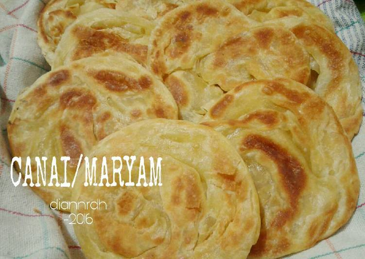
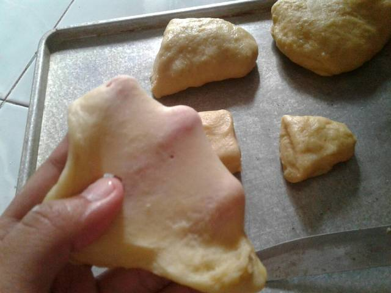

Resep Kue Maryam
Bahan-bahan:

- 250 gr tepung terigu
- 1 butir telur
- 3 sdm margarin, lelehkan
- 100 ml air hangat
- 2 sdm susu bubuk (optional)
- 1/2 sdt garam
- margarin leleh untuk olesan
- minyak untuk direndam
Langkah-langkah
- Campuran semua bahan roti jadi satu

- Uleni sampai kalis(aku pake tangan)jangan takut jika adonan lengket ya, lumuri tangan sesekali dg tepung(tapi jangan menambahkan tepung)uleni terus sampai adonan kalis.

- Kalisnya adonan canai tidak sekalis adonan roti ya, kira2 seperti ini sudah cukup.
